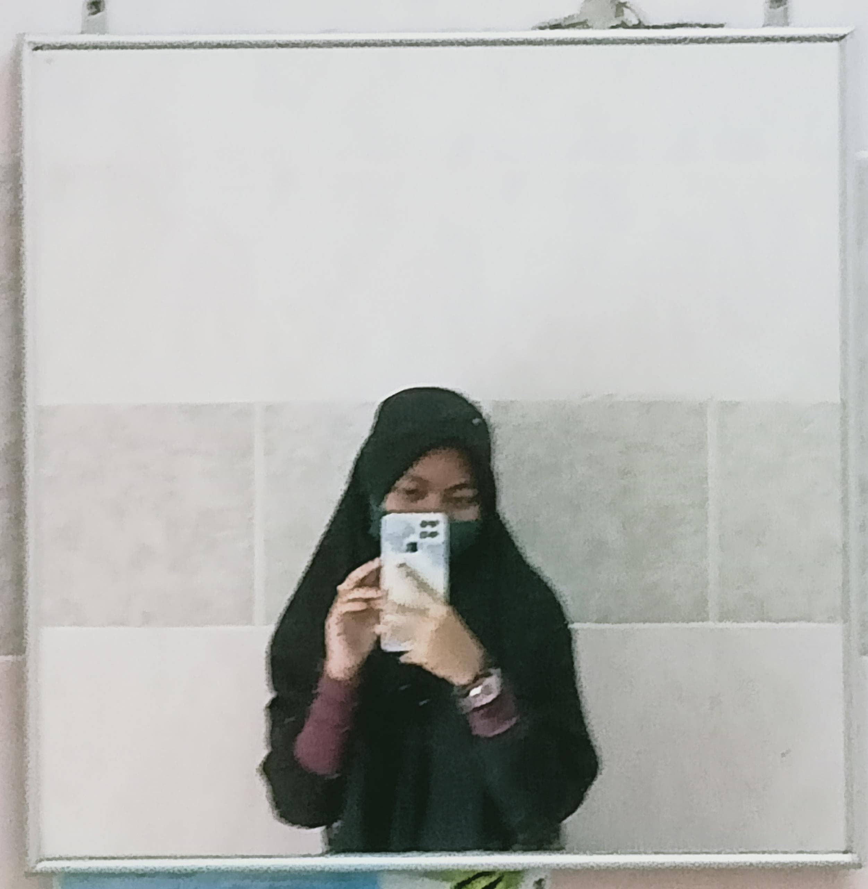
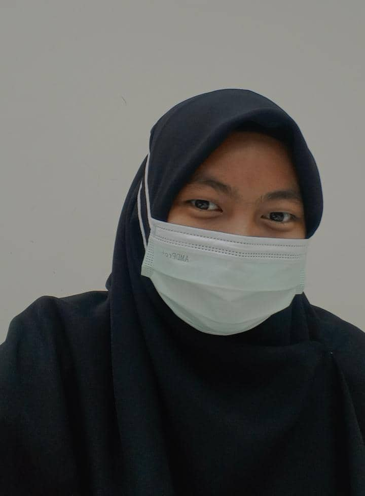
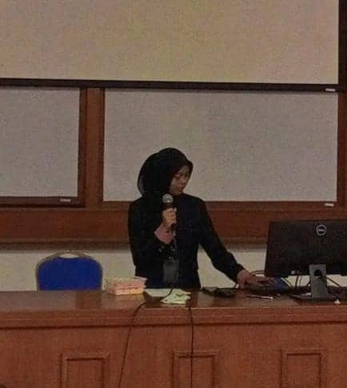
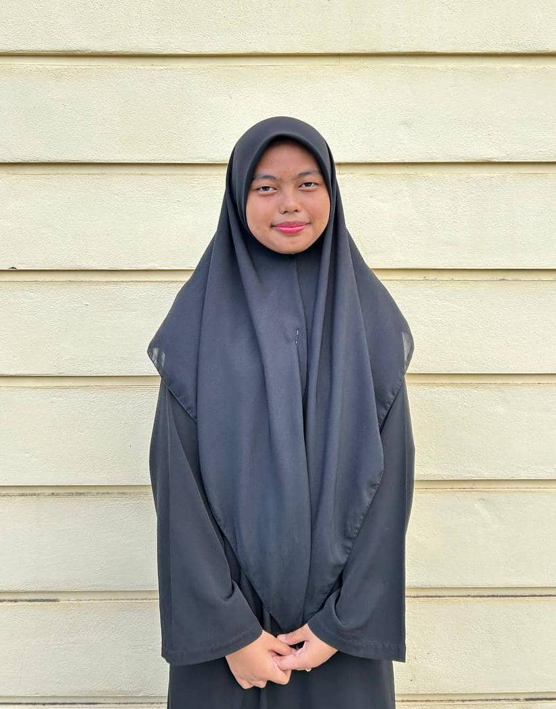

My Social Media
Happy Twenty for me˗ˏˋ ♡ ˎˊ˗
MY FAV QOUTES
"Yang sebenarnya bukanlah mata kepala yang buta tetapi yang buta itu ialah mata hati yang ada dalam dada" (QS 22:46)
About Me




Hello, my name is Siti Aisyah Aziz. You can call me Aisyah. I am a fourth semester student in Diploma Informatics Library. I live at Tanah Merah, Kelantan.
I have 5 siblings and I'm the youngest one.
My MBTI is ISFJ.